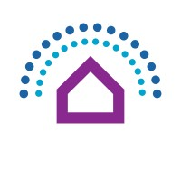

Experience
Software Engineering Intern
TargetJune 2025 – Aug 2025 · Minneapolis, MN
- Built a Backstock Recommendation Pipeline reducing inconsistent backroom item placement by 15–25%, improving efficiency across 2,000+ stores.
- Developed a Stores Replenishment Pick Worklist Pipeline revealing “lost sales,” unlocking $12–14M incremental sales and pulling forward $27–32M through faster shelf replenishment.
- Migrated a legacy v2 data pipeline to Kelsa v3 using Scala, Spark, Kafka, and Hadoop, improving processing speed by 40%.
Software Engineering Intern
Thompson Solution GroupsMay 2024 – Aug 2024 · Sioux City, IA
- Spearheaded the creation of an intuitive touchscreen application using JavaFX, increasing user engagement by 20%.
- Engineered UI enhancements that improved object-sorting accuracy by 30%, enabling staff to handle 50% more inventory.

Software Engineering Intern
MindHomesJan 2024 – May 2024 · Denver, CO
- Managed the change management process for 25% of total website content.
- Led a redesign process that improved user experience, developed high-fidelity prototypes, and reduced production costs.

Software Engineering Intern
Cyclone Engineering LabsJune 2023 – Aug 2023 · Ames, IA
- Researched blood glucose concentration models and developed a supporting relational database.
- Achieved a 90% ROI through research contributions, demonstrating long-term impact and value.